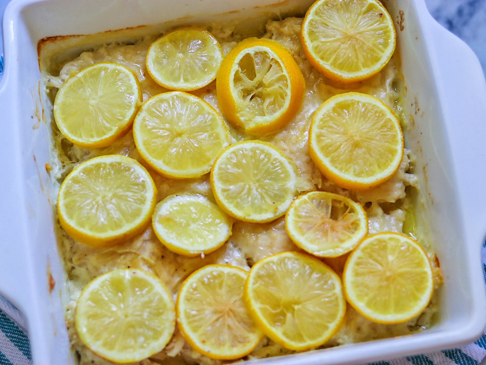

Grandma's Lemon Chicken

Lemon-flavored chicken that was the favorite of Holly Parsons' family.
The time required to follow this recipe is:
- 10 minutes preparing
- 45 minutes cooking
Ingredients
- 1/4 cup milk (Optional)
- 1 large egg
- 1 cup all-purpose flour
- 1 teaspoon lemon-pepper seasoning, or to taste
- 4 skinless, boneless chicken breast halves
- 1/2 cup milk (Optional)
- 1/3 stick unsalted butter (Optional)
- 4 lemons, sliced
Steps
- Preheat oven to 350 degrees F (175 C).
- Whip milk and egg in a small bowl. Mix flour and lemon-pepper seasoning in another small bowl.
- Dip chicken in egg mixture and then in flour to coat completely.
- Place milk and butter on the bottom of a baking dish to keep the chicken nice and moist.
- Place coated chicken on top and place lemon slices directly on chicken. Cover with foil.
- Bake in preheated oven until almost cooked through (about 30 minutes).
- Remove foil and continue to bake until no longer pink in the centers and juices run clear (about 15 minutes).
- Remove and place on a plate.